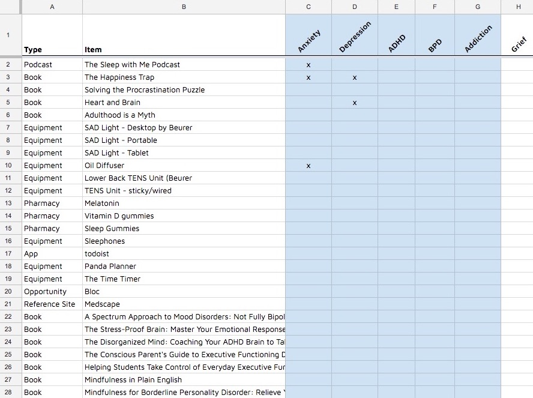

Shipshape Mental Health: Resources Re-Design
Rethinking page structure with a mobile-first approach
Identifying The Problem
Shipshape Mental Health is the office of a Psychiatric Nurse Practitioner with a treatment style that integrates medicine, therapy, as well as everyday wellness resources.
Shipshape has an existing webpage linking to frequently recommended resources for patient easy-access after their appointment. However, the site has not been receiving many visitors - and the few who do use it often report not being able to find what they needed.
By performing a complete re-design of the resources flow, this site section may better serve as a convienient link between talking about a resouce in an appointment to following-through with its use.
Research Phase
User Interviews
To better understand the factors influencing use of the current site, I had the provider ask a few basic questions to random clients.
- Clients range from ages 18 to 68, but most fall between ages 20 to 55
- Of those surveyed, nearly all had access to the internet on their phones and a computer. Only a few individuals reported the public library as their connection to the internet.
- Ease-of-ordering ranked highly in the list of barriers between viewing and ordering an item.
- To keep them coming back to the site, users expressed interest in a "browsable" experience.
- Responses were inconclusive on the use of a "share" button for an item.
While I was unable to perform first-hand interviews for reasons of confidentiality, I gathered significant insight through interviewing the provider on their experience as a content manager.
- Clients usually grab their phone when they're given the name of a resource, to try and look it up right then.
- The best opportunity for connecting a client with a resouce is during their appointment - being able to quickly navigate through the site on mobile is critical.
- Resources often overlap in their benefits - for instance one podcast may be useful for anxiety, depression, as well as insomnia.
- It can be difficult to remember all of the tools to recommend to a client, and spreadsheets or documents for sorting and categorizing data has not very useful.
- The provider does not have much of a web-coding background, and they would prefer a site that is able to be updated without needing a webmaster.
Personas
Personas were developed based on the frequency of traits seen in the practice's demographics and information from client interviews. Once completed, they were validated as "typical" by the provder.
Content Analysis
Before developing the information architecture of the site, I began by taking inventory of the site's existing content. I also requested a list of the content that has been staged, but not yet posted to the site.
While not inclusive of every resource to eventually be added, a broad representation of categories and topics took shape.
I assigned "best guess" taxonomy in my database to set it up, and then updated it with more "user-friendly taxonomy" after 3 trials of a card-sorting survey.
I used Google Sheets at the start of this exercise, but found that it was difficult to assign multiple categories to items in a way that produced a logical visual-summary. After some research on other options, I found the site "Airtable" - functional for my purposes of organizing content, but also can be transfered to the provider on the project's completion to be used as an internal database for tracking resources.


User Flow
Developing an intuitive navigation structure was a large component of this re-design. User interviews indicated a clear interest in an easy and intuitive navigation, that was also easily browsable.
In practice, I found this "perfect" structure to be difficult to nail down. I started by creating a set of notecards listing a selection of resources, and asked three people to group them. All three individuals separated the items by their type, but also commented that they could see grouping by topic to be useful.
In response, I worked out a user flow that could be searched by both category and topic - inspired by blog design-patterns. The most inclusive categories were item types, so they became categories, and topics were assigned as tags.

Design Phase
Wireframes
Below are examples of rapid sketching and wireframes for this project.
I found inspiration for numerous design patterns from resource websites and blogs. I rapidly iterated on layouts with pen and paper sketching, and translated two of the most promising series to wireframes for A/B testing.
Testing
By defining content using both categories and tags, the information structure and user-flow was relatively direct. The new challenge was finding a visual structure that is uncomplicated, but also provides enough information and options to guide the user towards finding what they need.
To evaluate the clarity of the content presentation I performed a click test using wireframes, presenting users with a category page and asking them to click to a topic page.
The most successful layout featured breadcrumbs and links integrated into titles. By not hiding navigation elements behind additional clicks, users were able to successfully find their destination on the first click, versus opening menus and elements to try and find the path. This design adds increased visual "clutter", but by using simple coloring and clear visual hierarchy, distractions are minimal.
Visual Design
The final visual design is intended to be simple and direct. While it may not have "trendy" visuals, animations, and effects, its focus on usability helps to meet the needs of a diverse user-base - and hopefully evokes a feeling of calm to visitors.
Conclusions & Next Steps
This re-design presented unique challenges involving patient confidentiality and a select user base. Developing a strategy to implement the project requirements involved many conversations with the primary stateholder to determine priorities and the root-problems driving various requested features.
Next steps for this project should likely involve a re-design of the business' landing page, to encourage visitors to explore the resources deeper in the site. Another route for increasing traffic could be through evaluating the site's SEO - as well as its overall taxonomy, to ensure it falls in line with what users are searching.